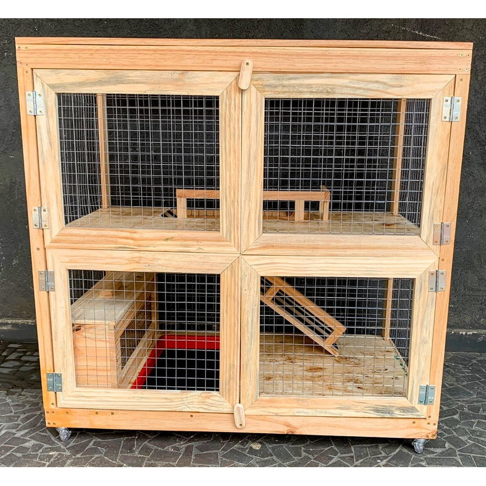
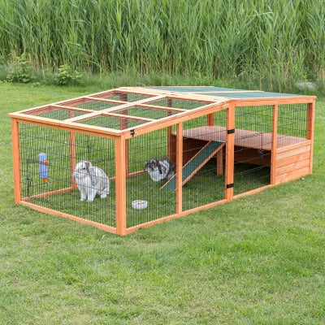
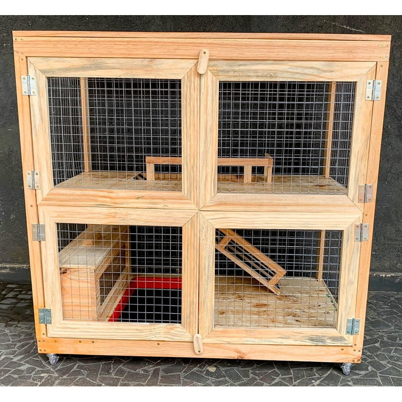
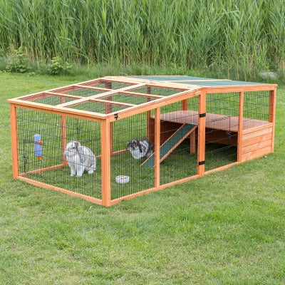

ALOJAMENTOS INDICADOS
O alojamento do porquinho da índia deve ser amplo e varia de acordo com a quantidade de animais. É recomendado que você crie pelo menos em duplas, pois são animais sociais e podem morrer de depression. Um alojamento para dois animais deve ter no mínimo 120cmx90cm. Existem diferentes tipos de alojamento no mercado. Podemos encontrar os cercadinhos, viveiros internos e viveiros externos. Lembre-se de fornecer sempre uma toca quente e segura para os viveiros externos.
 



ALOJAMENTOS NÃO INDICADOS
Algums alojamentos que vendem no mercado não são indicados para o seu porquinho da índia. Gaiolas, aquários e qualquer alojamento com chão gradeado deve ser evitado. As gaiolas normalmente são muito pequenas e sua grande maioria possui o chão gradeado. O chão gradeado é proibido, pois causa pododermatite, uma ferida que pode vir a infeccionar. Os aquários também são contraindicados por aprisionar o ar e não permitir um ambiente arrejado.